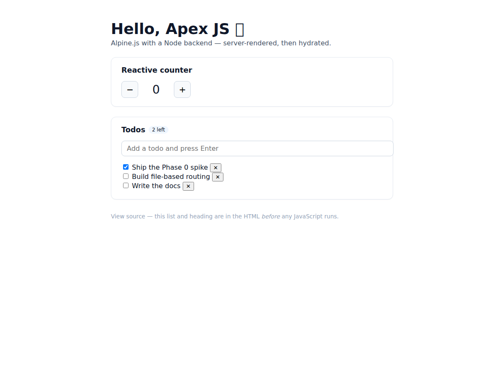

Getting started
From zero to a running app.
If you can write x-data, you can build a full-stack, server-rendered app.
Scaffold a project, run the dev server, then follow the dev → build → deploy
lifecycle.
Requirements #
Apex runs on Node.js (20.19+) with any package manager
(npm, pnpm, yarn). It is Node-native — no PHP,
no other runtime. TypeScript is set up for you.
Scaffold a project #
Install the CLI once, then the whole lifecycle is apex …:
npm i -g @apex-stack/core # install the Apex CLI
apex new my-app # scaffold, install deps, init git
cd my-app
apex dev
apex new installs dependencies with your package manager (npm/pnpm/yarn/bun) and initializes
git — pass --no-install or --no-git to skip. Rather not install globally? Use
npm create apexjs@latest my-app and run the CLI locally with npm run dev (or
npx apex dev). The libraries live under the @apex-stack/* scope
(@apex-stack/core is the CLI + runtime).
With the global install, apex works in any project. Without it, apex is a
project-local binary (like next or vite) — run it via npm run dev
or npx apex dev. A bare apex only resolves once it's installed globally.

Project structure #
A fresh app is intentionally small. Everything is a file in a known place:
my-app/
├─ pages/
│ └─ index.alpine # a route → "/" (SSR + hydrate)
├─ server/
│ └─ api/
│ └─ hello.ts # REST endpoint AND MCP tool
├─ package.json
└─ .gitignore| Location | What it holds |
|---|---|
pages/**/*.alpine | Routes. File path → URL. [param] segments are dynamic. See Routing. |
components/*.alpine | Reusable .alpine components embedded as <PascalCase />. See Components. |
server/api/*.ts | Typed API routes (defineApexRoute) and data resources (defineResource). REST + MCP. See AI-native. |
db/ | Schema, createDb, and db/migrations/*.sql. See Data. |
public/ | Static assets copied verbatim into the build output. |
components/, db/, and public/ are optional — add them
when you need them (or generate files with apex make).
Run the dev server #
The scaffold wires two scripts. Start the standard dev server:
npm run dev # apex dev → http://localhost:3000
npm run dev:islands # apex dev --islands (static-first)
The dev server is Vite in middleware mode fronted by an h3
app. It server-renders every .alpine page, serves your server/api/*
routes at /api/*, and exposes their MCP tools at /mcp. Pass
--port to change the port.
apex dev --islands renders pages static-first and hydrates interactive regions
individually, on a trigger — a page with no islands ships zero framework JS. See
Islands.
Your first edit #
Open pages/index.alpine. A page is one file: a server loader(),
an Alpine <template>, and scoped CSS. The loader() runs on
the server and its return value becomes the Alpine x-data scope — no fetch,
no boilerplate.
pages/index.alpine
<script server lang="ts">
export function loader() {
return { title: 'Welcome to Apex JS' }
}
</script>
<template x-data="{ open: false }">
<main>
<h1 x-text="title"></h1>
<button @click="open = !open">Toggle</button>
<p x-show="open">Hydrated in the browser.</p>
</main>
</template>
<style scoped>
main { max-width: 40rem; margin: 4rem auto; }
</style>
Change the title string and save — the browser updates on its own. The full
.alpine format (loader, template, scoped style, embedding) is covered in
Components.
Hot reload #
Dev reloads are automatic and scoped to what you changed:
.alpinepages, components, and styles — a full page reload on save, so SSR output and hydration always match.server/api/*.tsroutes and resources — reloaded per request. Editing a handler, a Zod schema, or a resource takes effect on the next request, no dev-server restart v0.1.4.
The dev → build → deploy lifecycle #
One project, three commands, from local iteration to production:
| Stage | Command | What happens |
|---|---|---|
| Develop | apex dev | SSR + hydrate with hot reload; API + MCP live at /api and /mcp. |
| Build | apex build | Prerender pages + per-page client bundle → static dist/. --islands for zero-JS SSG; --server for a Node server. |
| Migrate | apex migrate | Apply db/migrations/*.sql (a deploy step for apps with a database). |
| Serve | apex start | Run the production Node server built by apex build --server (dynamic routes + API/MCP + DB). |
The three build modes and hosting targets are covered in full on Build & deploy.